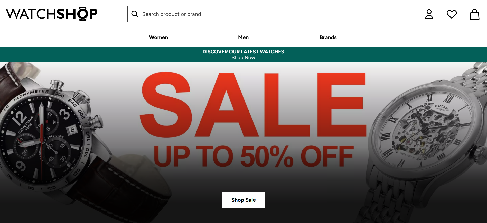

Comparative Analysis of Watch E-Commerce Websites
Introduction
This research provides a comparative analysis of three popular watch e-commerce websites. The comparison is based on various criteria, including visual design, user interface, user experience, technologies used, navigation structure, features, and functionality.
Websites Analyzed
- WatchShop
- Chrono24
- JomaShop
Comparison Criteria
- Visual Design
- User Interface
- User Experience
- Technologies Used
- Navigation Structure
- Features and Functionality
Comparison Table
| Criteria | WatchShop | Chrono24 | JomaShop |
|---|---|---|---|
| Visual Design | Modern and minimalistic | Colorful and vibrant | Elegant and luxurious |
| User Interface | Easy to navigate | Intuitive but cluttered | Streamlined and simple |
| User Experience | Engaging and fast | Somewhat slow | Highly immersive |
| Technologies Used | React, Node.js | Angular, PHP | Vue.js, Laravel |
| Navigation Structure | Clear and logical | Overwhelming menus | Focused and intuitive |
| Features and Functionality | AR try-on, wishlist | Multi-language support | Live chat, virtual concierge |
Reference Design



Detailed Analysis Write-up
WatchShop: The modern and minimalistic design of Website A ensures a visually appealing experience. Its user interface is intuitive, and the site leverages advanced technologies like React and Node.js to deliver a fast and responsive user experience. The navigation structure is well-organized, allowing users to find products quickly.
Chrono24: Featuring a colorful and vibrant design, Website B caters to younger audiences. However, its user interface feels cluttered at times. Despite using Angular and PHP, the site suffers from occasional lag. Navigation menus are overwhelming, but the inclusion of multi-language support is a notable feature.
JomaShop With an elegant and luxurious design, Website C targets premium customers. The streamlined interface and use of Vue.js and Laravel ensure a seamless browsing experience. Its standout features, such as live chat and virtual concierge, make it highly engaging.